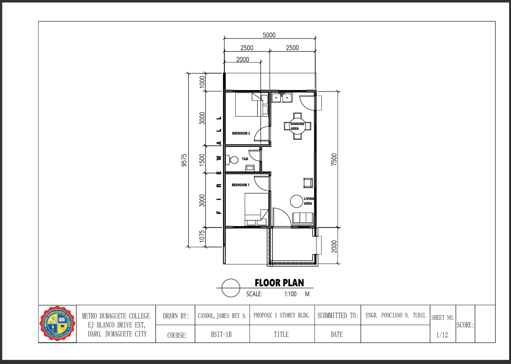
This floor plan presents a proposed single-story residential layout drafted at a 1:100 scale. It was drawn by James Rey A. Candol for the BSIT-1B course at Metro Dumaguete College in Dumaguete City. The document was submitted to Engr. Ponciano O. Tubil as the first sheet in a twelve-part set.
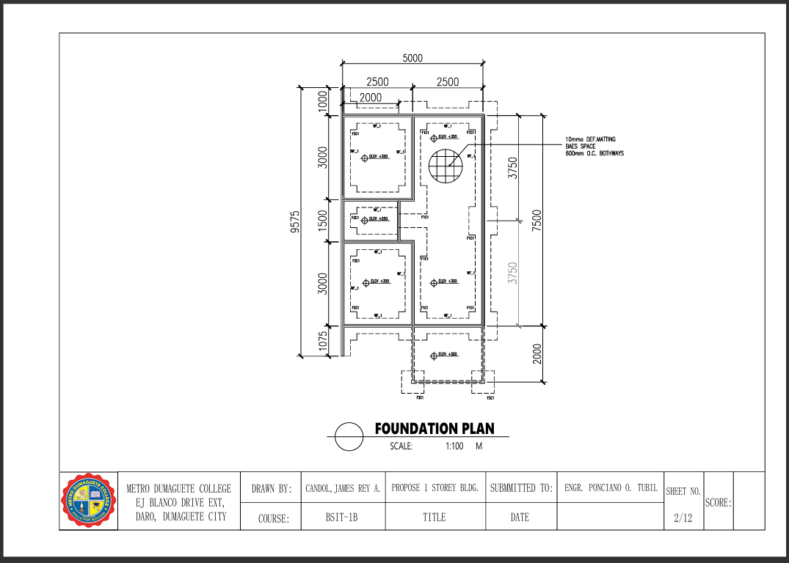
This technical drawing outlines the structural foundation plan for the proposed single-story building at a 1:100 scale. Prepared by James Rey A. Candol for Metro Dumaguete College, it details foundation layouts, footings, and elevations across specified grid dimensions. The document serves as Sheet 2 of 12 and was submitted to Engr. Ponciano O. Tubil
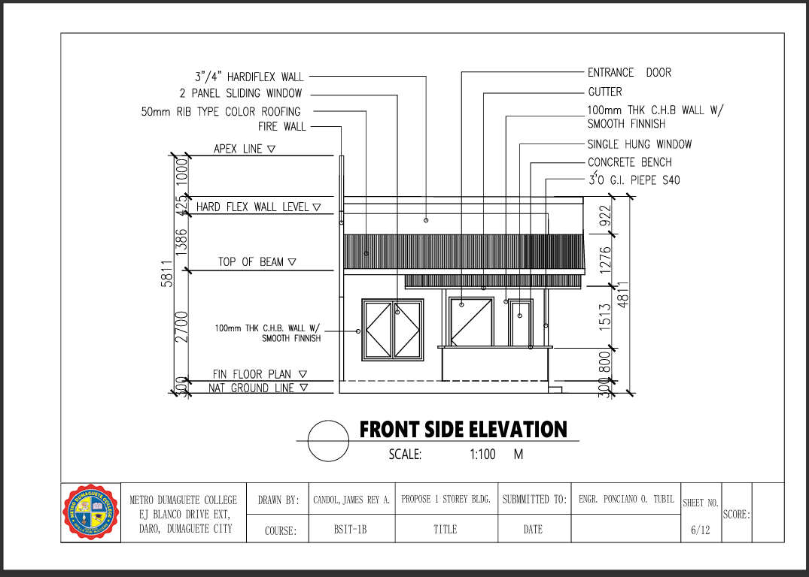
This architectural drawing illustrates the front side elevation view of the proposed single-story building at a 1:100 scale. Drawn by James Rey A. Candol for Metro Dumaguete College, it highlights key exterior specifications, including 50mm rib-type color roofing, 100mm thick C.H.B. walls with smooth finish, and various vertical height levels. The drawing serves as Sheet 6 of 12 in the project set submitted to Engr. Ponciano O. Tubil.
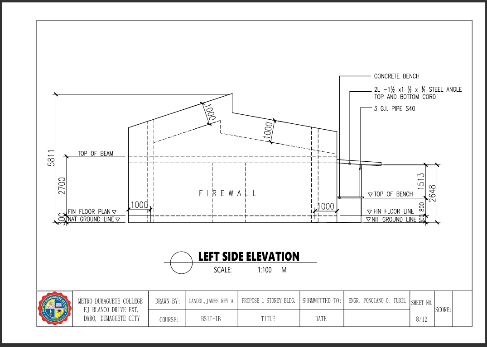
This technical blueprint details the left side elevation of the proposed single-story building at a 1:100 scale. Created by James Rey A. Candol for Metro Dumaguete College, it outlines key structural elements such as the solid firewall, concrete bench, and steel angle chord framing. The drawing functions as Sheet 8 of 12 within the project documentation submitted to Engr. Ponciano O. Tubil
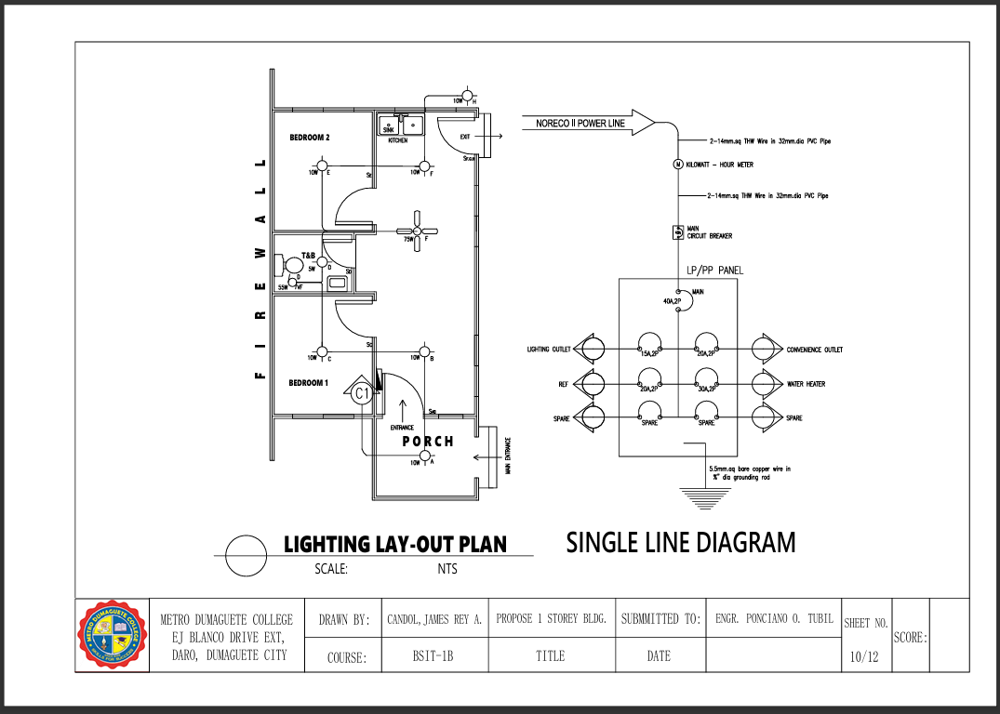
This technical plan features the lighting layout and single line diagram for the proposed single-story building project. Drafted by James Rey A. Candol for Metro Dumaguete College, it details the interior light fixture placement alongside the electrical distribution system connected to the NORECO II power line. The document serves as Sheet 10 of 12 submitted to Engr. Ponciano O. Tubil.
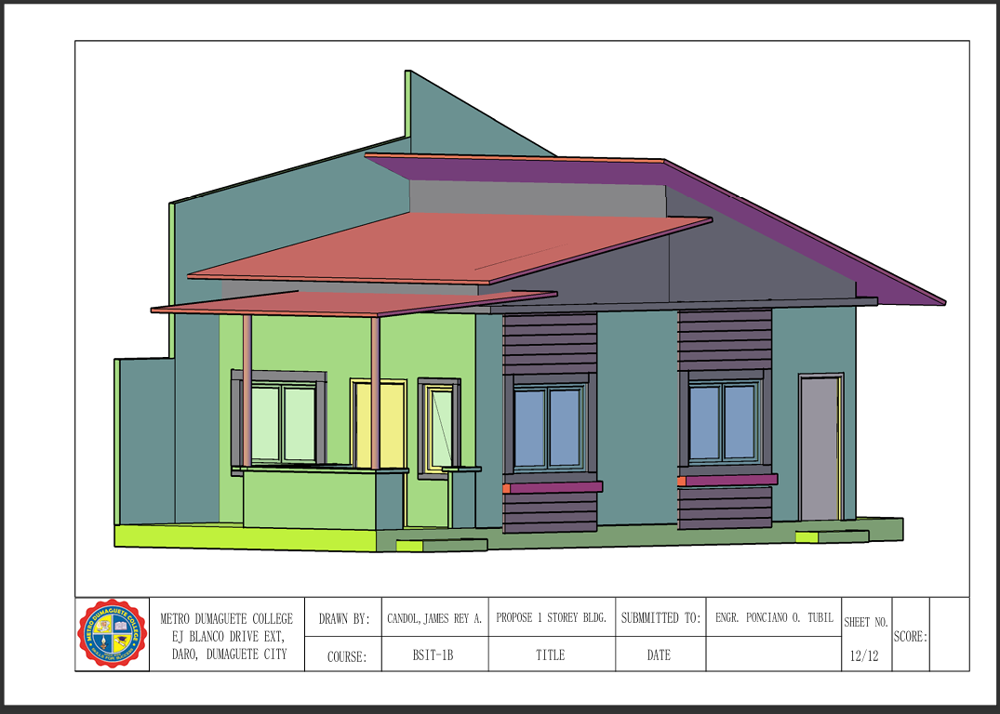
This 3D architectural rendering illustrates a colored perspective view of the proposed single-story building project. Created by James Rey A. Candol for Metro Dumaguete College, the model showcases the exterior color scheme, roofing, windows, and porch layout. It serves as Sheet 12 of 12 within the documentation submitted to Engr. Ponciano O. Tubil.
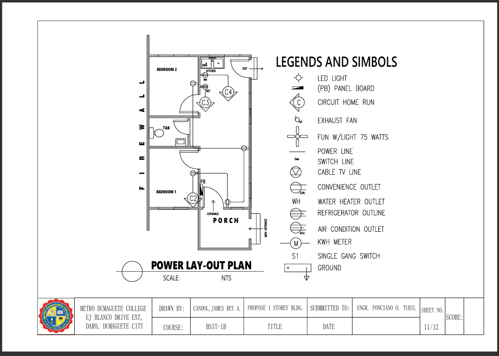
This technical drawing provides the power layout plan and legend of electrical symbols for the proposed single-story building. Drafted by James Rey A. Candol for Metro Dumaguete College, it details the placement of outlets, circuit home runs, switches, and appliance connections. The document acts as Sheet 11 of 12 submitted to Engr. Ponciano O. Tubil.
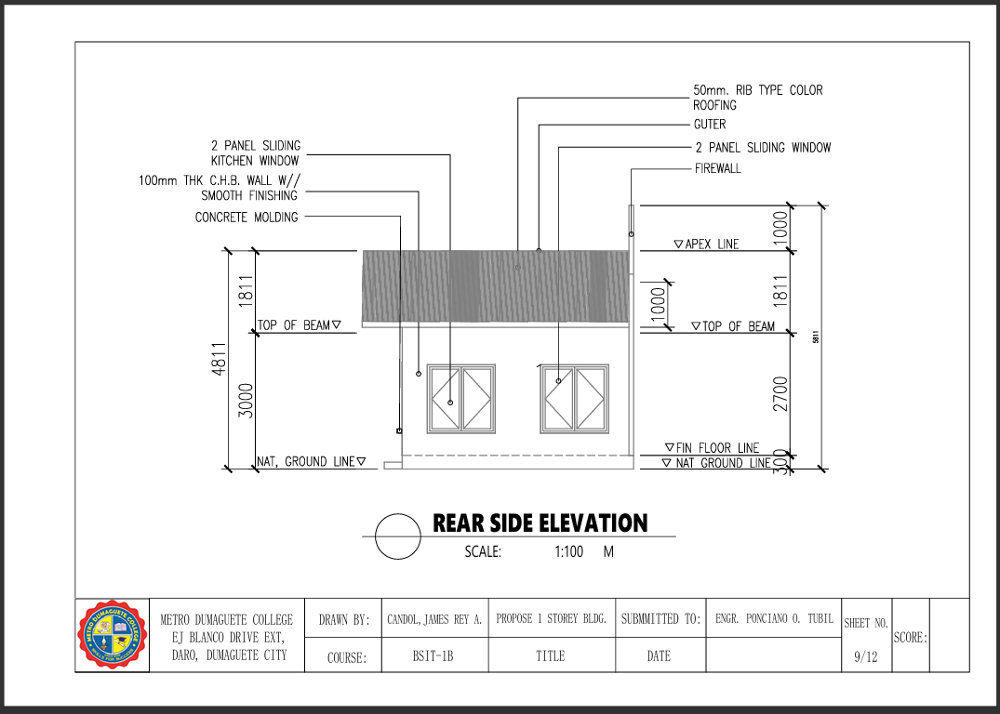
This architectural drawing details the rear side elevation of the proposed single-story building at a 1:100 scale. Prepared by James Rey A. Candol for Metro Dumaguete College, it outlines key specifications including two 2-panel sliding windows, 50mm rib-type color roofing, concrete molding, and height levels from natural ground line to apex line. The sheet serves as Sheet 9 of 12 within the documentation set submitted to Engr. Ponciano O. Tubil.
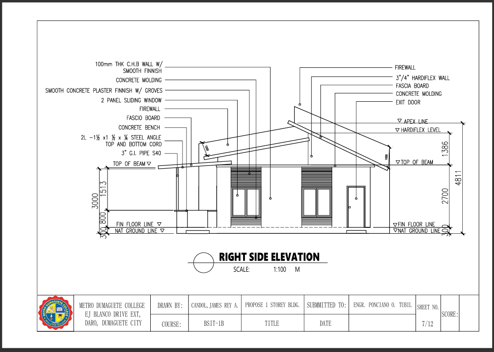
This architectural drawing illustrates the right side elevation view of the proposed single-story building at a 1:100 scale. Prepared by James Rey A. Candol for Metro Dumaguete College, it specifies key exterior details including 100mm THK C.H.B. walls with smooth finish, 2-panel sliding windows, fascia boards, and an exit door. The document is labeled as Sheet 7 of 12 within the architectural plan set submitted to Engr. Ponciano O. Tubil.
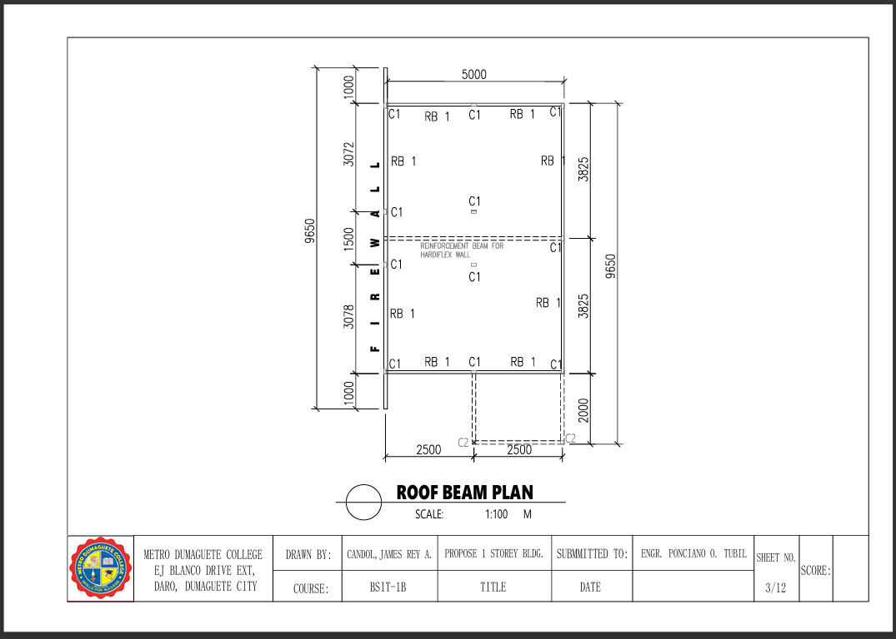
This structural drawing outlines the roof beam plan for the proposed single-story building at a 1:100 scale. Prepared by James Rey A. Candol for Metro Dumaguete College, it details column locations, roof beams (RB 1), and reinforcement beams for the Hardiflex wall across total layout dimensions of 5000 mm by 9650 mm. The blueprint functions as Sheet 3 of 12 within the architectural set submitted to Engr. Ponciano O. Tubil.
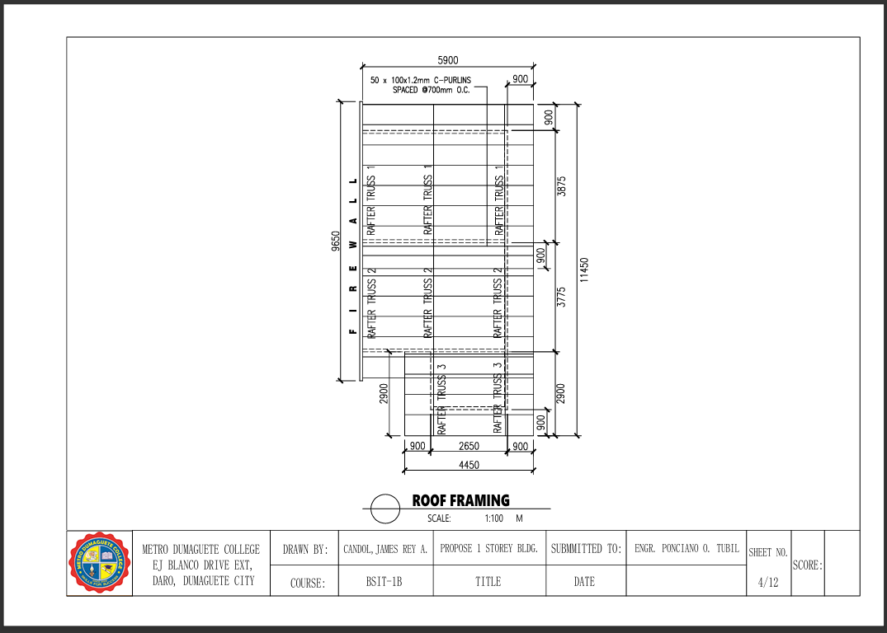
This structural plan details the roof framing layout for the proposed single-story building project at a scale of 1:100. Prepared by James Rey A. Candol for Metro Dumaguete College, it specifies structural framing members such as $50 \times 100 \times 1.2\text{ mm}$ C-purlins spaced at $700\text{ mm}$ O.C., alongside rafter trusses 1, 2, and 3. The document serves as Sheet 4 of 12 within the overall architectural and engineering submission to Engr. Ponciano O. Tubil.
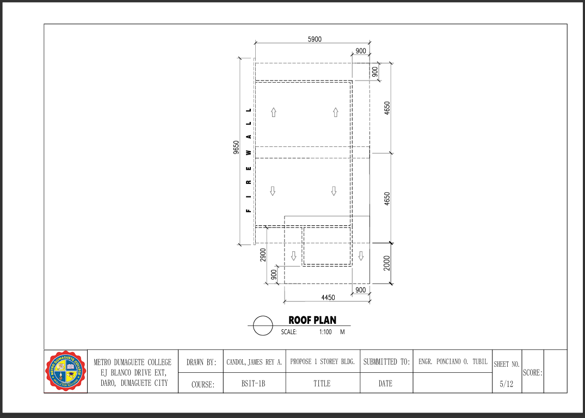
This architectural drawing outlines the overall roof plan for the proposed single-story building at a 1:100 scale. Drafted by James Rey A. Candol for Metro Dumaguete College, it indicates the directional roof pitch slopes, eaves overhangs, and overall roof dimensions along the firewall. The layout functions as Sheet 5 of 12 within the architectural set submitted to Engr. Ponciano O. Tubil.